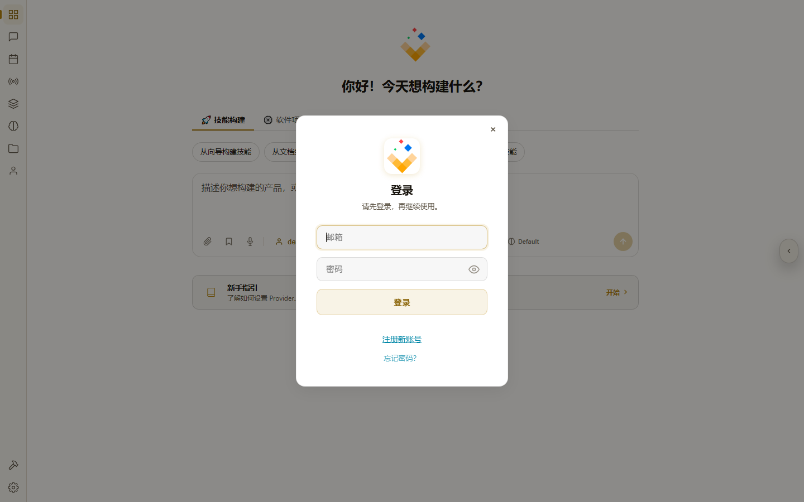

QBuilder 下载安装与账户注册
本课介绍选择与操作系统对应的 QBuilder 安装包、本地安装流程,以及首次启动后的账号注册步骤。
流程一览
整个流程分为四段:
- 第 0 步:打开 下载页,根据操作系统选择对应的 QBuilder 安装包。
- 第 1–3 步:按平台执行安装 — Windows 解压后双击安装包,macOS 在「隐私与安全」中放行,Linux 使用
sudo apt install。 - 第 4 步:启动 QBuilder Desktop,点击「登录」。
- 第 5 步:若无账号,点击「注册」,填写邮箱、密码与机构码(默认值
C2372QJ2),完成后自动登录。
第 0 步 · 选择与操作系统对应的安装包
从下载页选择对应平台的安装包
访问 quseit.com/download.html。页面下半部「桌面端下载」一栏包含三张卡片,分别对应 Windows、Linux、macOS。按当前操作系统选择相应卡片,点击卡片底部的下载按钮获取压缩包。
第 1 步 · Windows 安装
解压压缩包并双击安装包
Windows 版为 .zip 压缩包,需先解压再执行安装。在下载目录中右键 QBuilder-Setup-<版本>-Windows.zip → 选择「全部解压」,将得到 QBuilder-Setup-<版本>.exe。
1.1 解压后双击安装包
双击 QBuilder-Setup-<版本>.exe,弹出「您要允许此应用对设备进行更改吗?」UAC 提示时,选择「是」。
1.2 走完安装向导
安装器将依次提示:
- 许可协议 — 勾选同意,下一步。
- 安装目录 — 默认
C:\Program Files\QBuilder,可修改;建议初次安装保持默认。 - 快捷方式 — 同时勾选桌面与开始菜单,下一步。
- 点击「安装」,等待进度条完成。
- 勾选「启动 QBuilder」,点击「完成」。
第 2 步 · macOS 安装
在「隐私与安全」中放行应用
下载前需确认芯片类型: 下载页的 macOS 按钮点击后会展开两项 — Apple Silicon 芯片 选择 arm64、Intel 芯片 选择 x64。如不确定,可通过左上角 苹果菜单 → 关于本机 → 芯片 查看 — 显示「Apple M…」为 Apple Silicon,显示「Intel」则为 Intel。
2.1 启动一次以触发系统拦截
将下载的 .dmg 中的 QBuilder.app 拖入 /Applications 后,双击 QBuilder.app 启动一次。系统将提示「QBuilder 是从互联网下载的 App,您确定要打开吗?」或「无法打开,因为 Apple 无法检查其是否包含恶意软件」,此时选择「取消」,先不强行打开。
2.2 在「隐私与安全」中放行
打开 系统设置(macOS 13+) / 系统偏好设置(macOS 12) → 隐私与安全。向下滚动至页面底部,可看到一行「QBuilder 已被阻止打开,因为它不是来自已识别的开发者」,右侧有「仍要打开」按钮,点击该按钮。
2.3 再次启动 QBuilder
回到 Finder 双击 QBuilder.app,系统将再次要求 Touch ID 或密码验证,确认后 QBuilder 即启动。系统将记住该应用的放行状态,后续双击直接启动,不再提示。
第 3 步 · Linux 安装
通过 apt 安装
(Linux 包暂未发布,以下为发布后的标准路径。)
Linux 版以 .deb 包形式分发,使用系统包管理器安装。
3.1 确认发行版
QBuilder 当前支持 Ubuntu / Debian 系(含 Ubuntu 22.04+、Debian 12+)。其他发行版可通过 .deb 转 .rpm 等工具转换,但官方仓库暂未覆盖。
3.2 使用 apt 安装
将下列命令中的 <版本> 替换为下载页标注的当前版本号即可。
# 1. 下载安装包(到 ~/Downloads)
cd ~/Downloads
wget https://quseit.aipy.org/qbuilder/QBuilder-<版本>-1ubuntu1_amd64.deb
# 2. 装包(自动解包依赖并部署到 /opt/qbuilder)
sudo apt install ./QBuilder-<版本>-1ubuntu1_amd64.deb
# 3. 验证:二进制路径与版本号
which qbuilder # /usr/bin/qbuilder
qbuilder --version # 预期输出 QBuilder <版本>3.3 启动 GUI
安装完成后,可从应用菜单点击 QBuilder 图标启动 GUI,或在命令行直接运行 qbuilder。
第 4 步 · 启动 QBuilder 并点击「登录」
启动 QBuilder,点击「登录」
通过桌面快捷方式、开始菜单、应用程序目录或命令行启动 QBuilder,首次启动约 10–15 秒。进入主界面后,系统提示「请先登录,再继续使用。」 — 点击旁边的「登录」按钮,弹出登录对话框:
- 邮箱输入框
- 密码输入框(右侧有显示/隐藏密码的眼睛按钮)
- 「登录」主按钮
- 「注册新账号」链接 — 无账号时使用
- 「忘记密码?」链接

第 5 步 · 注册(含机构码)
填写邮箱、密码与机构码
点击登录页右下角的「注册」,跳转至注册表单。
5.1 基本字段
- 邮箱:常用邮箱,作为登录账号。
- 密码:不少于 8 位,字母与数字组合。
- 确认密码:再次输入。
- 显示名:出现在所发布的「智空间」顶部;后续可在设置中修改。
5.2 机构码的填写方式
注册表单中包含 机构码(Organization Code) 字段,为 QUSEIT 为推荐渠道(合作机构、企业内购、线下推广等)分配的合作识别码。
- 有推荐渠道:渠道方将提供其机构码,直接填写。
- 无推荐渠道:填写默认机构码
C2372QJ2;不影响功能使用,仅表示不归属任何特定渠道。
5.3 提交注册
- 勾选「我已阅读并同意《用户协议》和《隐私政策》」(点击链接可查看对应文档)。
- 点击「创建账号」 — 注册流程无需邮箱验证,提交即完成。
- 系统将自动登录,直接进入 QBuilder Desktop。
常见踩坑
- 下载后未解压即双击 zip:Windows 资源管理器默认仅预览 zip 内容,双击并不执行解压。需右键 → 选择「全部解压」。
- macOS 上双击 .dmg 后未将 App 拖入 /Applications:拖入 Applications 才算完成安装,否则 .dmg 卸载后 App 也将随之消失。
- Linux 使用
dpkg -i安装 .deb:dpkg不会自动解决依赖,缺失依赖时需手动执行apt install -f。建议直接使用sudo apt install ./xxx.deb,由 apt 统一处理依赖。